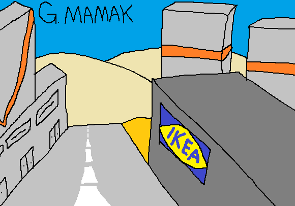

Mamak, Ankara Büyükşehir Belediyesi'nin sorumluluğu altındaki en güneydoğu ilçedir. Çankayalılar Mamak'a IKEA için gider, kekolarıyla bilir. Mavi Göl'e pikniğe gidip Doğukent üzerinden döner. Bazıları da Nata Vega'ya basketbol kursu için gider. Mamak çok daha fazlası olsa bile bunlar sebebiyle IKEA'nın oralara bir sürü gökdelen dikildi ve nasıl bir mucizeyse Doğukent caddesinde şehirle resmen sınıra sahip 2 köy hâlâ müteahhitler tarafından "şehirleştirilmedi". Bu arada tavsiyem ikisi de alakasız olsa bile Mamak'tan geçerken ya da mıyorken (mamak fiilinin çekimlemesi) Kağızman'a Ismarladım veya Timur Selçuk dinleyin.